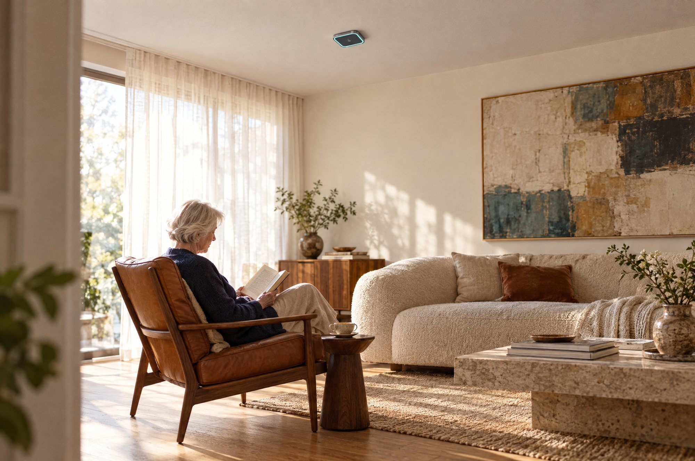

A fall at 2 am
It knows the minute it happens, not at nine when someone calls in.
It notices a fall, a racing heart, a night out of bed. No camera. Nothing to wear.

It noticed Dad was up at six and made his tea. So nobody had to ring and ask.
One on the ceiling. Fitted like a smoke alarm.

A care bed that looks like furniture.

Lighting you'd choose anyway, with the noticing built in.

It knows the minute it happens, not at nine when someone calls in.
Resting heart rate and breathing, read from across the room. No strap, no patch, no watch to charge.
Time is the signal. It counts the minutes so nobody has to knock.
Sleep, restlessness and trips out of bed. A slow change over weeks is often the first sign.
Too hot, too cold, too stuffy. Comfort is health.

Up, about and busy. The ordinary days are the ones families most want to hear about.
The alert goes to whoever can actually help.
A quiet note for you. Her independence left alone.

Tell us about the home or the building, and we'll show you where Florence would go.